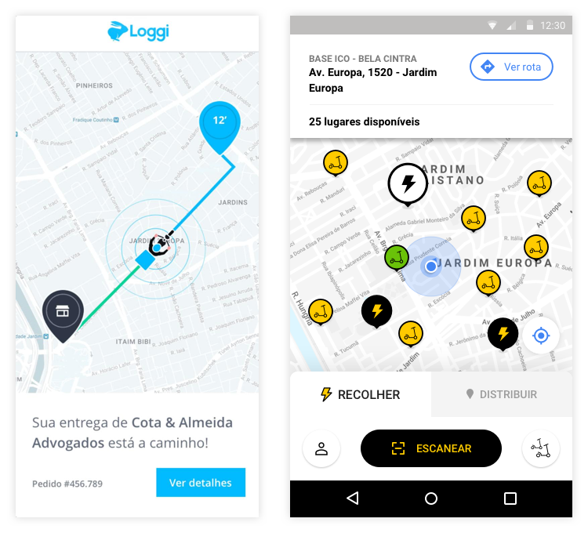
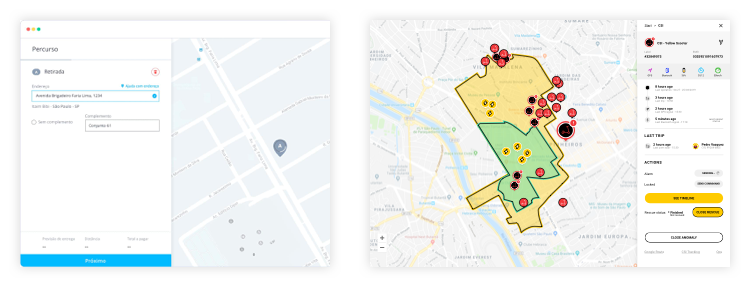

Olá Loggi
Sou Camilo, designer de produto em São Paulo.
Vocês estão expandindo o time
Eu adoraria estar dentro desse desafio de fazer a Loggi crescer.
Por que eu?
Por também ter interesse na parte de negócios, tenho prática em balancear o que as empresas conseguem entregar e o que usuários vão gostar.
Na maior parte do tempo gosto de escutar as pessoas falarem e contarem suas histórias e opiniões. É uma oportunidade de aprendizado e ajuda muito na hora de projetar produtos que outros usarão.
Estou sempre disposto a aprender coisas novas e o momento da Loggi vai exigir muito disso, então parece o lugar ideal.
Pode ver trabalhos no meu portfólio aqui.
O que a Loggi pode contar comigo para ajudar:
- UX design
- UI design
- Pesquisa
- Entrevistas com usuários
- Testes com usuários
- Redação de interface
- Até desenvolvimento front-end, caso necessário

Experiências em comum
Interfaces de navegação
Auxílio de navegação por meio de mapas, com pontos detalhados dentro da região exibida para os encarregados de executar os transportes.
Dashboard de operações
Vista global do status das operações/pedido e tomada de decisão pelo operador ou cliente.
Como costumo trabalhar
O processo não é sempre linear, leva mais ou menos dias e passa por todos os passos ou não, mas no geral a estrutura é a seguinte:
1) Imersão
Quando chega uma tarefa, tento entender com as pessoas envolvidas tudo que elas sabem a respeito do problema que tentaremos resolver.
- Conversas com PO/PM
- Conversas com pessoas de outros departamentos, como atendimento, operações e tecnologia para pegar os pontos de vista deles
- Contato com o usuário final, quando possível
- Leitura de pesquisa ou material existente sobre o assunto
- Minha própria pesquisa
2) Hipóteses
Após as conversas e a pesquisa, começo a formar minha opinião sobre como aquilo deveria funcionar.
- Desenho algumas jornadas de usuário, para enxergar o fluxo do começo ao fim
- Monto um protótipo rápido (usando papel e caneta ou algum software) e mostro para as pessoas envolvidas se a ideia principal parece no caminho certo
- Uso o feedback recebido para refinar as ideias atuais ou criar novas
3) Protótipo e testes iniciais
Quando algo parece promissor, começo a desenhar as telas e deixá-las clicáveis para testar e ter certeza que funciona.
- Protótipo de baixa-fidelidade, usando materiais já existentes ou componentes de design
- Teste do fluxo com o time de produto e desenvolvedores
- Correção de inconsistências ou erros encontrados nos testes
- Mais testes com outras pessoas de outras áreas, inclusive usuários quando possível
4) Refinamento da interface
Nesse ponto, com testes já feitos, é hora de dar o acabamento para as telas.
- Trabalho na UI com média/alta fidelidade
- Refino as interações entre as telas, como transições
- Testo novamente com usuários potenciais e pessoas não envolvidas com o projeto
- Refino e testo novamente, caso necessário
5) Hora da entrega final
Está aprovado, testado e parece funcionar.
- Refinamento final da interface em ítens como ícones, sombras, cores, tamanhos de fonte e espaçamentos
- Handoff para os desenvolvedores na plataforma apropriada
- Liberação para um grupo pequeno de usuários ou beta-testers escolhidos, antes do lançamento em produção
- Correção de eventuais problemas descobertos com esses usuários
- Rollout progressivo em produção, até atingir 100% do público planejado
Novamente, meu portfólio
Parece interessante?
Então vamos conversar.
email: camilo.oliveira@gmail.com
celular/whatsapp: (11) 98182-8203